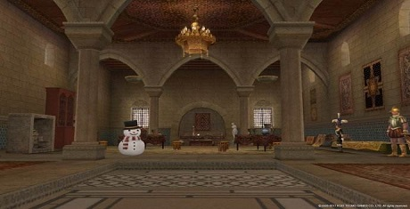
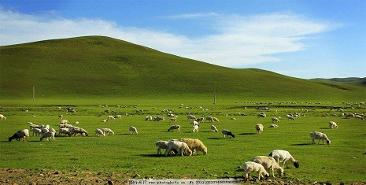
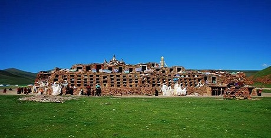

风情文化
塞外文化
地域文化

一峰峰骆驼，在大漠的孤烟中慢慢移动着身影，像小舟在大海里航行，乘着风，迎着浪。骆驼的眼睫毛是双重的，当风起沙扬的时候，双重的眼睫毛像卫士似的，将沙挡住，不使它吹进眼里。

表请回军掩尘骨，莫教兵士哭龙荒。——唐.王昌龄.《从军行七首》其三 将军向皇帝上表，奏请班师，以便能把战死沙场的将士们的尸骨运回故土安葬，不能让士兵们为他乡埋葬自己的战友而伤感痛哭。

茫茫的大草原一碧千里,到处翠色欲滴,好像绿色的绒毯,上面还不满了五颜六色的小花儿,又给无边的绿毯绣上了美丽的图案.
绿色的原野,好像铺上了一层浩瀚无边的绒毯.
莽莽的原野上散发出清新、潮湿的泥土气息.
草原如此平展,就像风平浪静的海洋,放眼望去,遍盖大地的秋草在晚风的吹拂中波状起伏.
一簇簇野花,像五颜六色的花环,点缀着原野.

一个世纪又一个世纪,一条银色飘带,把中国、印度、希腊、古罗马和波斯文化联结起来。
把古老中国发明的丝绸、火药、造纸、印刷术传到西方。又把古代西方的黄瓜、胡萝卜、芍
药、石榴、核桃等,沿这条古道传入我国.这条主要运送丝绸的路,人们把它称之为丝绸之路。

这种住宅只用砖、木、纸、水泥、玻璃五种材料，而且还尽量使用工厂成品，所以常常户主们自己都可以动手建造，因此比较经济。
由于这种建筑消除了一切不必要的装饰，强调保持材料本色，所以给建筑带来了一种自然的美。赖特忠于天然材料的特质并将他们在建筑整体中充分地展露，成为人工物与自然之间的有力联系。他很善于利用材料和装饰取得与周围环境的内在联系。在设计中体现了砖、木的本来面目，它们都是与大自然相依的。